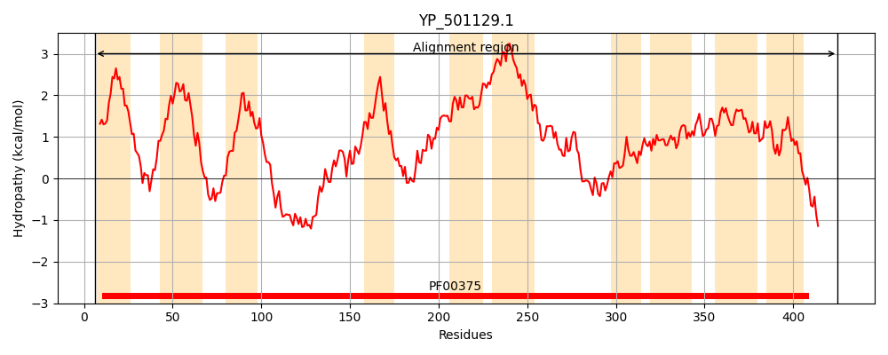
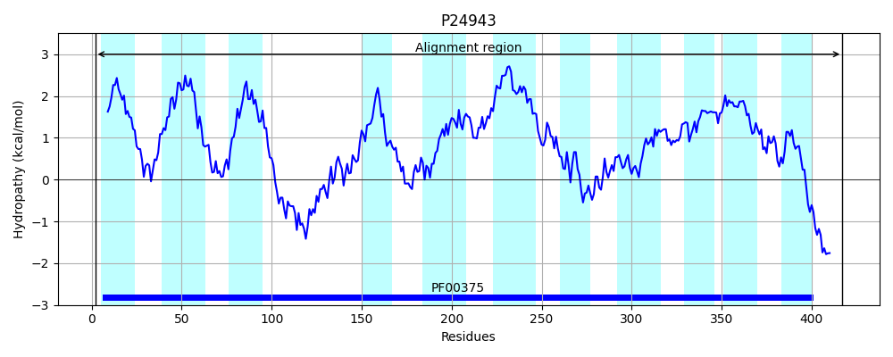
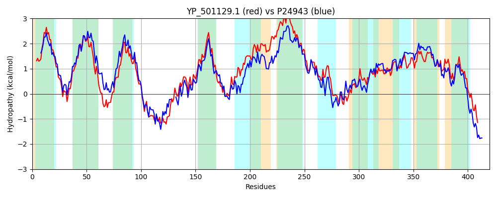

Hit Accession: P24943
Hit TCID: 2.A.23.1.2
Hit Description: gnl|BL_ORD_ID|9515 gnl|TC-DB|P24943|2.A.23.1.2 PROTON/SODIUM-GLUTAMATE SYMPORT PROTEIN (GLUTAMATE-ASPARTATE CARRIER PROTEIN) - Bacillus stearothermophilus.
Mach Len: 420
e:0.000000
Query TMS Count : 10
Hit TMS Count: 11
TMS-Overlap Score: 8.650000
Predicted Substrates:CHEBI:9175;sodium(1+), CHEBI:5584;hydron, CHEBI:29987;glutamate(2-), CHEBI:29995;aspartate(2-)
BLAST Alignment:
Score: 1245 , Bit scores: 484 bits, E-value: 1.3e-170, Alignment length: 420, Percentage identity: 55
Query: 6 RKISLPMQVVIALVLGVVVGLLLYGQENVANYIKPFGDVFLNLIKMIVIPVVFCSLALSISNVGESKTVGRYGWKTILYFEIITTIAIGLGIIFGNLFKPGAGLDPTKLPKGDISKYQSTAHAAEQSTYGNHFIDTIVHIIPTNFFEALNKGELLPIIFFAVFFGLGLAAVGKKAEPVKEFLSGSLEAVFWMINKILKLAPLGVFAFICTTIITFGASALLPLLKLVLVVVFAMVFFVFAILGLVAWMCGINIMNIIRILKSELLLAFSTSSSEAVLPVMMKKMENFGSPKEITSFVIPIGYTFNLDGSALYQSIAALFVAQMYGMHLTLSEQIVLMLTLMITSKGMAAVPGTSIVVLLTTLGAMGLPAQGLALIIGVDRILDMVRTCVNVIGNALSTIVIAKWENVYDKAKGQEYLKSI 425
RKI L Q+ I L+LG++VG + YG VA Y++P GD+FL LIKMIVIP+V SL + +++VG+ K +G+ G KTI+YFEIITTIAI +G++ N+F+PG G++ L K DI Y T + + + ++T V+I+P N FE+L KG++LPIIFF+V FGLG+AA+G+K +PV +F G+ EA+F++ N+I+K AP GVFA I T+ FG +L+PL KLV+VV MVFF+F +LG VA + GINI +II+ILK EL+LA+ST+SSE VLP +M+KMENFG PK ITSFVIP GY+FNLDGS LYQ++AA+F+AQ+YG+ + +S+QI L+L LM+TSKG+A VPG S VVLL TLG +G+P +GLA I G+DRILDM RT VNVIGN+L+ I+++KWE Y++ KG++Y+ +
Sbjct: 2 RKIGLAWQIFIGLILGIIVGAIFYGNPKVATYLQPIGDIFLRLIKMIVIPIVISSLVVGVASVGDLKKLGKLGGKTIIYFEIITTIAIVVGLLAANIFQPGTGVNMKSLEKTDIQSYVDTTNEVQHHS----MVETFVNIVPKNIFESLTKGDMLPIIFFSVMFGLGVAAIGEKGKPVLQFFQGTAEAMFYVTNQIMKFAPFGVFALIGVTVSKFGVESLIPLSKLVIVVYATMVFFIFVVLGGVAKLFGINIFHIIKILKDELILAYSTASSETVLPKIMEKMENFGCPKAITSFVIPTGYSFNLDGSTLYQALAAIFIAQLYGIDMPISQQISLLLVLMVTSKGIAGVPGVSFVVLLATLGTVGIPIEGLAFIAGIDRILDMARTAVNVIGNSLAAIIMSKWEGQYNEEKGKQYIAQL 417 | Protein Hydropathy Plots: |
|---|
|  |  |
Pairwise Alignment-Hydropathy Plot:
|
|---|
|  |